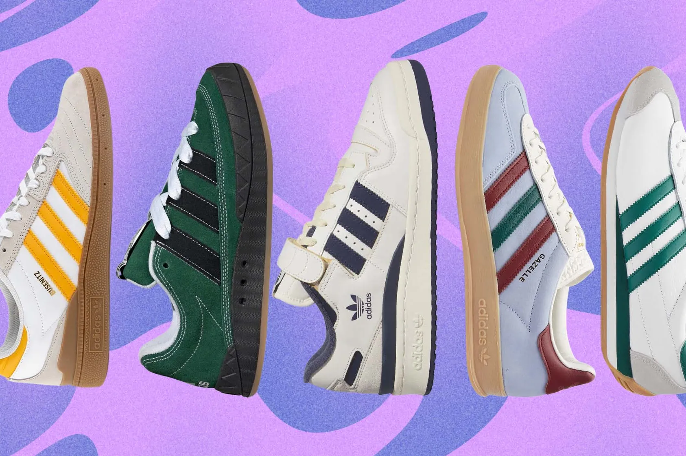

Az Adidas AG (saját írásmóddal: adidas) egy német sportszergyártó vállalat, melynek központja alapítása óta a bajorországi Herzogenaurachban található, Nürnberg közelében. A vállalkozás 1989 óta részvénytársasági formában működik, és a tőzsdére 1995-ben került. 2006 májusától kezdve hivatalos neve Adidas AG, mely a Adidas Csoport holdingvállalataként szolgál. A cég a FC Bayern München német labdarúgócsapat 8,33%-os részesedésével is rendelkezik, és birtokosa a Runtastic osztrák fitnesz-technológiai cégnek. Az Adidas bevétele 2018-ban 21,915 milliárd eurót tett ki.
A vállalat cipőket, öltözékeket, sportfelszereléseket és divatkellékeket kínál saját üzletláncain és kereskedőin keresztül. A termékek között megtalálhatók licencelt termékek is, mint például karórák, kozmetikumok és szemüvegek. A cég a Nike után a második legnagyobb sportszergyártó a világon, és elismert a sportolók, csapatok és nemzetközi sportesemények támogatójaként.